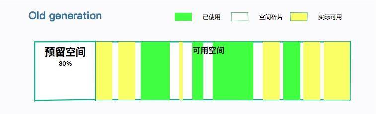

- 00 开篇词：JVM，一块难啃的骨头.md.html
- 01 一探究竟：为什么需要 JVM？它处在什么位置？.md.html
- 02 大厂面试题：你不得不掌握的 JVM 内存管理.md.html
- 03 大厂面试题：从覆盖 JDK 的类开始掌握类的加载机制.md.html
- 04 动手实践：从栈帧看字节码是如何在 JVM 中进行流转的.md.html
- 05 大厂面试题：得心应手应对 OOM 的疑难杂症.md.html
- 06 深入剖析：垃圾回收你真的了解吗？（上）.md.html
- 07 深入剖析：垃圾回收你真的了解吗？（下）.md.html
- 08 大厂面试题：有了 G1 还需要其他垃圾回收器吗？.md.html
- 09 案例实战：亿级流量高并发下如何进行估算和调优.md.html
- 10 第09讲：案例实战：面对突如其来的 GC 问题如何下手解决.md.html
- 11 第10讲：动手实践：自己模拟 JVM 内存溢出场景.md.html
- 12 第11讲：动手实践：遇到问题不要慌，轻松搞定内存泄漏.md.html
- 13 工具进阶：如何利用 MAT 找到问题发生的根本原因.md.html
- 14 动手实践：让面试官刮目相看的堆外内存排查.md.html
- 15 预警与解决：深入浅出 GC 监控与调优.md.html
- 16 案例分析：一个高死亡率的报表系统的优化之路.md.html
- 17 案例分析：分库分表后，我的应用崩溃了.md.html
- 18 动手实践：从字节码看方法调用的底层实现.md.html
- 19 大厂面试题：不要搞混 JMM 与 JVM.md.html
- 20 动手实践：从字节码看并发编程的底层实现.md.html
- 21 动手实践：不为人熟知的字节码指令.md.html
- 22 深入剖析：如何使用 Java Agent 技术对字节码进行修改.md.html
- 23 动手实践：JIT 参数配置如何影响程序运行？.md.html
- 24 案例分析：大型项目如何进行性能瓶颈调优？.md.html
- 25 未来：JVM 的历史与展望.md.html
- 26 福利：常见 JVM 面试题补充.md.html
- 捐赠
07 深入剖析：垃圾回收你真的了解吗？（下）
由于上一课时篇幅比较多，我们在这一课时重点讲解上一课时中提到的 CMS 垃圾回收器，让你可以更好的理解垃圾回收的过程。
在这里首先给你介绍几个概念：
- Minor GC：发生在年轻代的 GC。
- Major GC：发生在老年代的 GC。
- Full GC：全堆垃圾回收。比如 Metaspace 区引起年轻代和老年代的回收。
理解了这三个概念，我们再往下看。
CMS 的全称是 Mostly Concurrent Mark and Sweep Garbage Collector（主要并发标记清除垃圾收集器），它在年轻代使用复制算法，而对老年代使用标记-清除算法。你可以看到，在老年代阶段，比起 Mark-Sweep，它多了一个并发字样。
CMS 的设计目标，是避免在老年代 GC 时出现长时间的卡顿（但它并不是一个老年代回收器）。如果你不希望有长时间的停顿，同时你的 CPU 资源也比较丰富，使用 CMS 是比较合适的。
CMS 使用的是 Sweep 而不是 Compact，所以它的主要问题是碎片化。随着 JVM 的长时间运行，碎片化会越来越严重，只有通过 Full GC 才能完成整理。
为什么 CMS 能够获得更小的停顿时间呢？主要是因为它把最耗时的一些操作，做成了和应用线程并行。接下来我们简要看一下这个过程。
CMS 回收过程
初始标记（Initial Mark）
初始标记阶段，只标记直接关联 GC root 的对象，不用向下追溯。因为最耗时的就在 tracing 阶段，这样就极大地缩短了初始标记时间。
这个过程是 STW 的，但由于只是标记第一层，所以速度是很快的。

注意，这里除了要标记相关的 GC Roots 之外，还要标记年轻代中对象的引用，这也是 CMS 老年代回收，依然要扫描新生代的原因。
并发标记（Concurrent Mark）
在初始标记的基础上，进行并发标记。这一步骤主要是 tracinng 的过程，用于标记所有可达的对象。
这个过程会持续比较长的时间，但却可以和用户线程并行。在这个阶段的执行过程中，可能会产生很多变化：
- 有些对象，从新生代晋升到了老年代；
- 有些对象，直接分配到了老年代；
- 老年代或者新生代的对象引用发生了变化。

还记得我们在上一课时提到的卡片标记么？在这个阶段受到影响的老年代对象所对应的卡页，会被标记为 dirty，用于后续重新标记阶段的扫描。
并发预清理（Concurrent Preclean）
并发预清理也是不需要 STW 的，目的是为了让重新标记阶段的 STW 尽可能短。这个时候，老年代中被标记为 dirty 的卡页中的对象，就会被重新标记，然后清除掉 dirty 的状态。
由于这个阶段也是可以并发的，在执行过程中引用关系依然会发生一些变化。我们可以假定这个清理动作是第一次清理。
所以重新标记阶段，有可能还会有处于 dirty 状态的卡页。
并发可取消的预清理（Concurrent Abortable Preclean）
因为重新标记是需要 STW 的，所以会有很多次预清理动作。并发可取消的预清理，顾名思义，在满足某些条件的时候，可以终止，比如迭代次数、有用工作量、消耗的系统时间等。
这个阶段是可选的。换句话说，这个阶段是“并发预清理”阶段的一种优化。
这个阶段的第一个意图，是避免回扫年轻代的大量对象；另外一个意图，就是当满足最终标记的条件时，自动退出。
我们在前面说过，标记动作是需要扫描年轻代的。如果年轻代的对象太多，肯定会严重影响标记的时间。如果在此之前能够进行一次 Minor GC，情况会不会变得好了许多？
CMS 提供了参数 CMSScavengeBeforeRemark，可以在进入重新标记之前强制进行一次 Minor GC。
但请你记住一件事情，GC 的停顿是不分什么年轻代老年代的。设置了上面的参数，可能会在一个比较长的 Minor GC 之后，紧跟着一个 CMS 的 Remark，它们都是 STW 的。
这部分有非常多的配置参数。但是一般都不会去改动。
最终标记（Final Remark）
通常 CMS 会尝试在年轻代尽可能空的情况下运行 Final Remark 阶段，以免接连多次发生 STW 事件。
这是 CMS 垃圾回收阶段的第二次 STW 阶段，目标是完成老年代中所有存活对象的标记。我们前面多轮的 preclean 阶段，一直在和应用线程玩追赶游戏，有可能跟不上引用的变化速度。本轮的标记动作就需要 STW 来处理这些情况。
如果预处理阶段做的不够好，会显著增加本阶段的 STW 时间。你可以看到，CMS 垃圾回收器把回收过程分了多个部分，而影响最大的不是 STW 阶段本身，而是它之前的预处理动作。
并发清除（Concurrent Sweep）
此阶段用户线程被重新激活，目标是删掉不可达的对象，并回收它们的空间。
由于 CMS 并发清理阶段用户线程还在运行中，伴随程序运行自然就还会有新的垃圾不断产生，这一部分垃圾出现在标记过程之后，CMS 无法在当次 GC 中处理掉它们，只好留待下一次 GC 时再清理掉。这一部分垃圾就称为“浮动垃圾”。

并发重置（Concurrent Reset）
此阶段与应用程序并发执行，重置 CMS 算法相关的内部数据，为下一次 GC 循环做准备。
内存碎片
由于 CMS 在执行过程中，用户线程还需要运行，那就需要保证有充足的内存空间供用户使用。如果等到老年代空间快满了，再开启这个回收过程，用户线程可能会产生“Concurrent Mode Failure”的错误，这时会临时启用 Serial Old 收集器来重新进行老年代的垃圾收集，这样停顿时间就很长了（STW）。
这部分空间预留，一般在 30% 左右即可，那么能用的大概只有 70%。参数 -XX:CMSInitiatingOccupancyFraction 用来配置这个比例（记得要首先开启参数UseCMSInitiatingOccupancyOnly）。也就是说，当老年代的使用率达到 70%，就会触发 GC 了。如果你的系统老年代增长不是太快，可以调高这个参数，降低内存回收的次数。
其实，这个比率非常不好设置。一般在堆大小小于 2GB 的时候，都不会考虑 CMS 垃圾回收器。
另外，CMS 对老年代回收的时候，并没有内存的整理阶段。这就造成程序在长时间运行之后，碎片太多。如果你申请一个稍大的对象，就会引起分配失败。
CMS 提供了两个参数来解决这个问题：
（1） UseCMSCompactAtFullCollection（默认开启），表示在要进行 Full GC 的时候，进行内存碎片整理。内存整理的过程是无法并发的，所以停顿时间会变长。
（2）CMSFullGCsBeforeCompaction，每隔多少次不压缩的 Full GC 后，执行一次带压缩的 Full GC。默认值为 0，表示每次进入 Full GC 时都进行碎片整理。
所以，预留空间加上内存的碎片，使用 CMS 垃圾回收器的老年代，留给我们的空间就不是太多，这也是 CMS 的一个弱点。

小结
一般的，我们将 CMS 垃圾回收器分为四个阶段：
- 初始标记
- 并发标记
- 重新标记
- 并发清理
我们总结一下 CMS 中都会有哪些停顿（STW）：
- 初始标记，这部分的停顿时间较短；
- Minor GC（可选），在预处理阶段对年轻代的回收，停顿由年轻代决定；
- 重新标记，由于 preclaen 阶段的介入，这部分停顿也较短；
- Serial-Old 收集老年代的停顿，主要发生在预留空间不足的情况下，时间会持续很长；
- Full GC，永久代空间耗尽时的操作，由于会有整理阶段，持续时间较长。
在发生 GC 问题时，你一定要明确发生在哪个阶段，然后对症下药。gclog 通常能够非常详细的表现这个过程。
我们再来看一下 CMS 的 trade-off。
优势：
低延迟，尤其对于大堆来说。大部分垃圾回收过程并发执行。
劣势：
- 内存碎片问题。Full GC 的整理阶段，会造成较长时间的停顿。
- 需要预留空间，用来分配收集阶段产生的“浮动垃圾”。
- 使用更多的 CPU 资源，在应用运行的同时进行堆扫描。
CMS 是一种高度可配置的复杂算法，因此给 JDK 中的 GC 代码库带来了很多复杂性。由于 G1 和 ZGC 的产生，CMS 已经在被废弃的路上。但是，目前仍然有大部分应用是运行在 Java8 及以下的版本之上，针对它的优化，还是要持续很长一段时间。
© 2019 - 2023 Liangliang Lee. Powered by gin and hexo-theme-book.